深入了解 REQUIRED_MIRROR_FREE_MB 和USABLE_FILE_MB
原创 2017-11-08 Oracle 宅必备
这个专题讲ASM相关的内容
Normal 或 High 类型的磁盘组需要额外的空间用来在一个或2个故障组失效时进行数据的重建，若空间不足，将导致文件无法冗余，这时如果在有磁盘故障，则会导致数据丢失
下面我们通过V$ASM_DISKGROUP视图和例子来帮助理解
ASM> select label,os_mb from v$asm_disk
2 where label like 'SAN%' order by label;
LABEL OS_MB
------------------------------- ----------
SAN01 255
SAN02 255
SAN03 255
SAN04 255
SAN05 255
SAN06 255
这里我们建立6块255M的磁盘
1. External 类型磁盘组
我们建立一个external类型的磁盘组
ASM> create diskgroup demo external redundancy
disk 'ORCL:san01'
disk 'ORCL:san02'
disk 'ORCL:san03'
disk 'ORCL:san04'
disk 'ORCL:san05'
disk 'ORCL:san06'
attribute 'compatible.asm' = '11.2.0.0.0';
现在我们查询视图
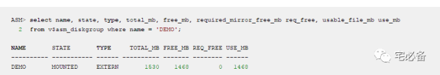
可以看到:
TOTAL_MB=255*6=1530M
FREE_MB=1468M 不见得62M用于存储元数据文件
REQ_FREE=0是由于使用的是external类型，无需对文件进行冗余
USE_MB=FREE_MB-REQ_FREE=1468M
2. normal 类型磁盘组
2.1 不指定故障组磁盘数
ASM> create diskgroup demo normal redundancy
failgroup FG1 disk
'ORCL:san01'
failgroup FG2 disk
'ORCL:san02'
failgroup FG3 disk
'ORCL:san03'
failgroup FG4 disk
'ORCL:san04'
failgroup FG5 disk
'ORCL:san05'
failgroup FG6 disk
'ORCL:san06'
attribute 'compatible.asm' = '11.2.0.0.0';
Diskgroup created.
首先我们创建一个normal类型的磁盘组，包含六块磁盘，每个磁盘属于自己的故障组
存储在一个故障组的数据会在另外个故障组有一个副本
ASM> select name, state, type, total_mb, free_mb, required_mirror_free_mb req_free, usable_file_mb use_mb from v$asm_diskgroup where name = 'DEMO';
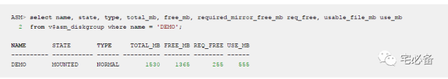
可以看到:
TOTAL_MB=255*6=1530M
FREE_MB=1365M
REQ_FREE=255
表示需要255M用来当一个磁盘的大小失效时重建数据,
一般为一个故障组的大小，如故障组大小不同，会使用最大的那个
USE_MB=(FREE_MB-REQ_FREE)/2=555M
接下来我们在磁盘组中新建一个200M的数据文件
SQL> create tablespace foo datafile '+DEMO' size 200m;
Tablespace created.
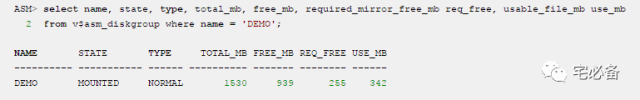
TOTAL_MB=255*6=1530M
FREE_MB=1530-(200*2)=939M
REQ_FREE=255M
USE_MB=(FREE_MB-REQ_FREE)/2=342M
然后我们再新建一个200M的数据文件
SQL> alter tablespace foo add datafile '+DEMO' size 200m;
Tablespace altered.
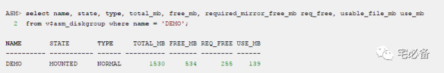
TOTAL_MB=255*6=1530M
FREE_MB=1530-(2002)-(2002)=534M
REQ_FREE=255M
USE_MB=(FREE_MB-REQ_FREE)/2=139M
这里我们可以看到可用空间为139M，那么我们是否可以继续增加数据文件呢
SQL> alter tablespace foo add datafile '+DEMO' size 200m;
Tablespace altered.
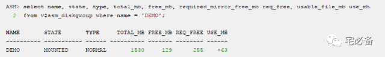
TOTAL_MB=255*6=1530M
FREE_MB=1530-(2002)-(2002)-(200*2)=129M
REQ_FREE=255M
USE_MB=(FREE_MB-REQ_FREE)/2=-63M
可以看到其实我们还是可以新建数据文件的
只不过可用的大小变为了负数，这意味着如果这时磁盘失效ASM将无法重建数据，这时如果有其他磁盘损坏则会导致数据丢失
2.2 指定故障组磁盘数
现在我们新建一个磁盘组，共三个故障组，每个故障组2块磁盘
ASM> create diskgroup demo normal redundancy
failgroup FG1 disk
'ORCL:san01',
'ORCL:san02'
failgroup FG2 disk
'ORCL:san03',
'ORCL:san04'
failgroup FG3 disk
'ORCL:san05',
'ORCL:san06'
attribute 'compatible.asm' = '11.2.0.0.0';
Diskgroup created.
我们查询ASM磁盘状况
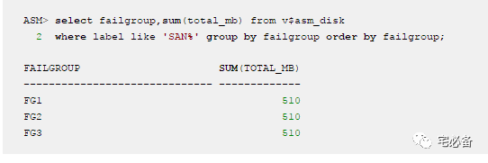
这里每个故障组的大小为510M
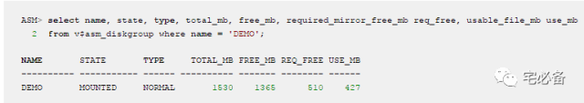
这里的REQ_FREE为510M，为最大的故障组大小
TOTAL_MB=255*6=1530M
FREE_MB=1365
REQ_FREE=510M
USE_MB=(FREE_MB-REQ_FREE)/2=427M
接下来我们建立的磁盘组只有2个故障组，每个故障组三块磁盘
ASM> create diskgroup demo normal redundancy
failgroup FG1 disk
'ORCL:san01',
'ORCL:san02',
'ORCL:san03'
failgroup FG2 disk
'ORCL:san04',
'ORCL:san05',
'ORCL:san06'
attribute 'compatible.asm' = '11.2.0.0.0';
Diskgroup created.
我们查看ASM磁盘组信息
ASM> select failgroup,sum(total_mb) from v$asm_disk
where label like 'SAN%' group by failgroup order by failgroup;
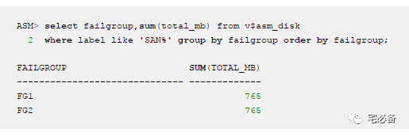
可以看到一共2个故障组，每个故障组765M
接下来让我们看下这时的空间是如何管理的
ASM> select name, state, type, total_mb, free_mb, required_mirror_free_mb req_free, usable_file_mb use_mb from v$asm_diskgroup where name = 'DEMO';
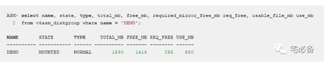
我们看到这时REQ_FREE的大小为255M而不是想象中的765M，意味着ASM只预计单块磁盘的大小而不是故障组中的所有磁盘
3. High 类型磁盘组
3.1 不指定故障组磁盘数量
最后我们建立一个high类型的磁盘组
ASM> create diskgroup demo high redundancy
failgroup FG1 disk
'ORCL:san01'
failgroup FG2 disk
'ORCL:san02'
failgroup FG3 disk
'ORCL:san03'
failgroup FG4 disk
'ORCL:san04'
failgroup FG5 disk
'ORCL:san05'
failgroup FG6 disk
'ORCL:san06'
attribute 'compatible.asm' = '11.2.0.0.0';
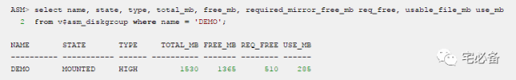
这时 REQ_FREE等于2块故障组的大小，如故障组大小不一样，则等于最大的两个故障组大小
TOTAL_MB=255*6=1530M
FREE_MB=1365
REQ_FREE=255*2=510M
USE_MB=(FREE_MB-REQ_FREE)/3=285M
3.2 指定故障组磁盘数量
接下来我们将2块磁盘划分到一个故障组
ASM> create diskgroup demo high redundancy
failgroup FG1 disk
'ORCL:san01',
'ORCL:san02'
failgroup FG2 disk
'ORCL:san03',
'ORCL:san04'
failgroup FG3 disk
'ORCL:san05',
'ORCL:san06'
attribute 'compatible.asm' = '11.2.0.0.0';
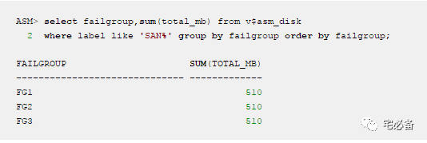
可以看到共三个故障组，每个故障组大小为510M
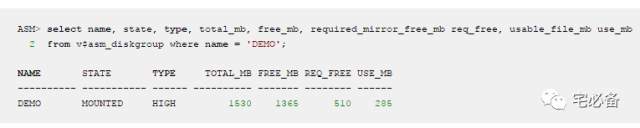
可以看到这里的REQ_FREE为510M，不过这里的大小并不是一个故障组的大小，而是另外2个故障中2块磁盘的大小
4. 结论
通过上面的实验我们得出结论：
REQUIRED_MIRROR_FREE_MB 的大小为ASM 磁盘组为达到指定的冗余级别所需要的用来重建数据的空间，它由磁盘组冗余级别和故障组的数量决定
-
Normal级别：
-
若拥有至少3个故障组，则该大小为整个故障组的大小，如故障组大小不同，则取最大的故障组大小
-
若只用2个故障组，则该大小为单个磁盘的大小，如磁盘大小不同，则取最大的磁盘大小
-
High级别：
-
若拥有至少4个故障组，则该大小为2个故障组的大小，如故障组大小不同，则取最大的2个故障组大小
-
若只用3个故障组，则该大小为故2个磁盘的大小，如磁盘大小不同，则取最大的2个磁盘的大小
USABLE_FILE_MB 为可存放数据的大小，大小计算公式为：
USABLE_FILE_MB = (FREE_MB – REQUIRED_MIRROR_FREE_MB) / [2|3]
本文参考自: